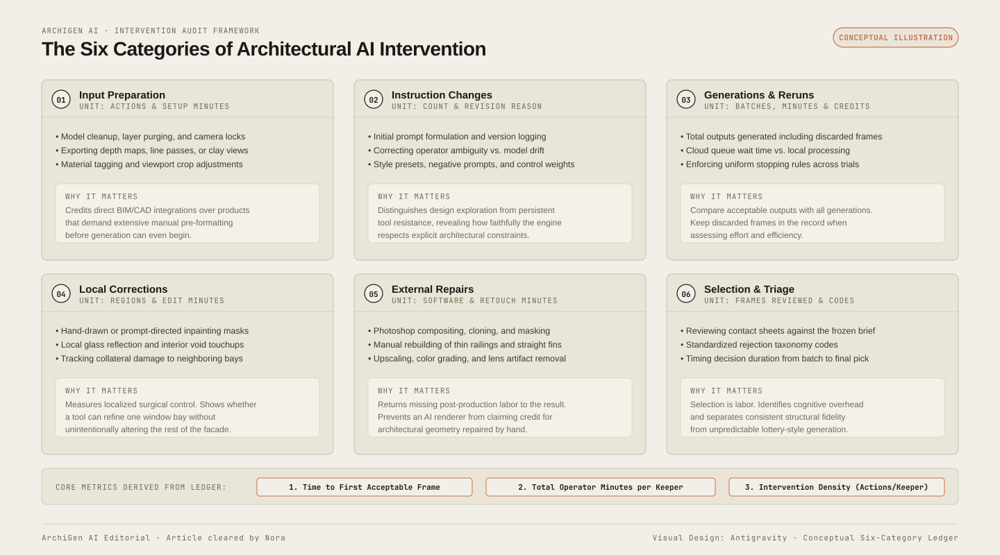

Consider a hypothetical comparison: one SketchUp model goes in, and four polished images come out. Gendo, ChatGPT, ArchiVinci, and Spacely AI appear to have sat the same exam. The final grid alone cannot tell you how many prompt revisions, discarded generations, local edits, external repairs, or minutes of selection were required. Those are questions for a documented test, not facts that can be inferred from its winning images.
The final grid may still be useful. It is not yet a fair workflow comparison.
Today's architecture AI sweep surfaced another same-model shootout alongside several ranked lists. These formats answer an obvious question: what happens when popular tools see the same project? Their weakness is the missing middle. A studio does not buy the chosen JPEG. It buys the process required to reach that JPEG again on tomorrow's view.
An intervention ledger makes that process visible. It is a short record of every meaningful human action from fixed input to accepted output. Used beside a timer and geometry score, it turns a beauty contest into evidence a practice can use.
Same source does not mean same assignment
A SketchUp screenshot can enter one product as a direct image prompt, another through a dedicated model import, and another only after cropping or conversion. One tool may expose geometry-retention strength. Another may offer style presets but no negative instruction. A third may edit the prior result conversationally. Equal source files do not create equal operating conditions.
Do not force every product through identical clicks. That would punish useful product design. Give each tool its normal documented route, then record what the operator had to do. The ledger is not a demand for interface sameness. It is a way to compare the labor and judgment that each route consumes.
Begin with a frozen brief: source file, camera, crop, output dimensions, material direction, time of day, required elements, forbidden changes, and acceptance threshold. Preserve the original source. Start the clock when the operator opens the product, not when generation begins.

Record six kinds of intervention
1. Input preparation
Log every crop, resize, cleanup, model purge, material assignment, line-style change, and exported control pass. A renderer that needs a clean depth map may produce excellent geometry, but that preparation belongs in its cost. A tool that reads the model directly should receive credit for fewer handoffs.
Record preparation once when it can serve the whole project and per view when it must be repeated. That distinction prevents a ten-minute template setup from looking worse than five minutes of cleanup required on every camera.
2. Instruction changes
Save the first prompt and each revision. Mark whether a change corrects operator ambiguity, responds to a tool failure, or explores a new design direction. Those are different events. If the brief says light limestone and the first prompt says only stone, fixing the prompt is an operator correction. If the tool repeatedly turns limestone into timber, that is product behavior.
Preset changes count too. Choosing “minimal exterior” instead of “photoreal” is an instruction even when no words are typed. Screenshot or export the final settings so a colleague can repeat them.
3. Generations and reruns
Count every output, including failures that never reach the comparison grid. Record batch size, credits consumed, elapsed time, and why each frame was rejected. Separate technical failures from visual failures. A server error costs time but says little about image quality. A moved window says a great deal about design fidelity.
Give every tool the same stopping rule, such as twenty minutes, a fixed credit budget, or two correction rounds after the first batch. Without a limit, the most patient operator wins.
4. Masks and local corrections
Log the region, method, and time for every selective edit. If one tool corrects a facade through a conversational instruction while another requires a hand-drawn mask, the difference is operationally important. Also record collateral change outside the target zone. A fast edit that damages three adjacent bays creates another correction.
Keep masks as project artifacts when licensing and policy permit. They are not invisible setup debris. They can be reused across material options and may become part of the studio's actual production value.
5. External repairs
Photoshop, upscalers, compositing, color grading, and manual text fixes must appear in the same ledger. External finishing is normal architectural visualization work. Hiding it is the problem. Name the software, action, and minutes. Keep separate totals for repair required to meet the brief and optional polish added for presentation.
A product should not receive full credit for a railing rebuilt by hand. Nor should a strong renderer be penalized because every comparison frame received the same final color grade. The record lets readers distinguish both cases.
6. Selection time
Selection is labor. Count how many frames the reviewer inspected, how long the review took, and why the keeper won. If a tool produces sixty plausible options and one correct image, the contact sheet may look impressive while the decision cost stays hidden.
Use named rejection codes: camera drift, massing change, opening error, material mismatch, broken thin element, unwanted object, weak light, or duplicate. Consistent codes reveal whether a product has one repeatable failure or random noise.
| Ledger field | Unit | Why it matters |
|---|---|---|
| Input preparation | Actions and minutes | Shows work before generation |
| Instruction revisions | Count and reason | Separates brief repair from tool correction |
| Generated frames | Count, time, credits | Exposes the hidden contact sheet |
| Local corrections | Regions and minutes | Measures edit precision |
| External repair | Actions and minutes | Returns missing labor to the result |
| Selection | Frames reviewed and minutes | Measures decision overhead |
Turn the ledger into three useful numbers
First calculate time to first acceptable frame. “Acceptable” must mean the image clears the frozen geometry and brief checks, not that it looks promising. This number matters in a live design session.
Second calculate total operator minutes per accepted frame. Include preparation, prompting, corrections, external repair, and selection. Report machine wait separately so studios can see whether a faster GPU or subscription tier would change the result.
Third calculate intervention density: meaningful operator actions divided by accepted frames. The number is not universal science, but it is useful inside one controlled test. A low density can indicate a direct route. A high density can be worthwhile when the result offers control that other products cannot match.
Keep fidelity scores beside these numbers. A one-click image that changes the building is not efficient. A slower route that preserves every opening may be the only valid route for a client deliverable. Labor and correctness belong in the same decision, but not collapsed into one vague star rating.
The winning image is an output. The ledger reveals the product.
How to publish an honest comparison
Show the common source and frozen brief first. For each product, publish the chosen output, total generated frames, elapsed time, operator minutes, credits, correction count, external software, and geometry defects. Add the final prompt or settings when terms allow. If the test operator knows one tool much better, disclose that advantage.
Keep the full contact sheet even if the article shows only representative failures. A vendor question, software update, or internal purchasing review may require the original record. Date the test and list product versions because interfaces and models change.
For a studio trial, rotate operators. Let a specialist run the advanced graph and a generalist run the hosted products, then swap one task. The difference between expert and ordinary operation can be more important than the gap between two models.
Our take: hidden effort is the ranking
Same-input comparisons are moving in the right direction. They are more informative than vendor galleries or unrelated hero images. The next step is to show the work between upload and keeper.
Architects already understand revision logs, drawing issues, and time sheets. An intervention ledger applies that familiar discipline to generated imagery. It does not make the process bureaucratic. A six-column sheet and a timer are enough.
Publish the winner. Publish the fingerprints too.
Based on the 11 September 2026 intel sweep, including a four-tool comparison using one SketchUp source and current ranked lists of AI rendering software for architects. ArchiGen AI carries no sponsored placements.